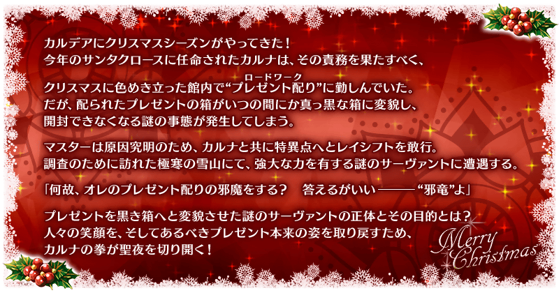
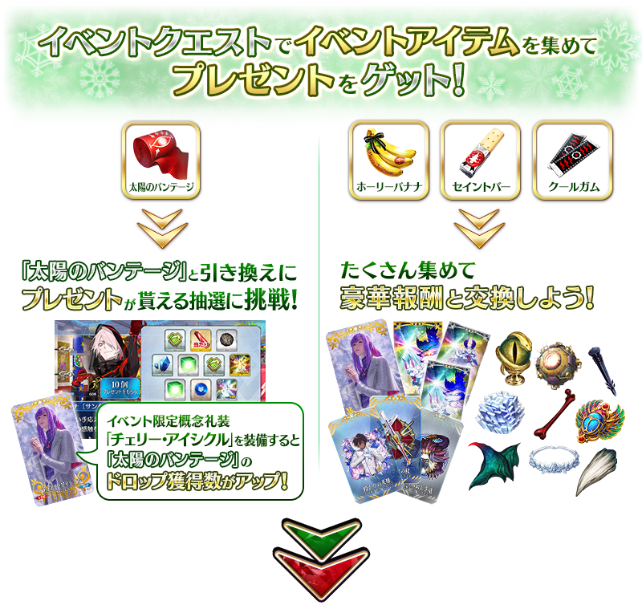
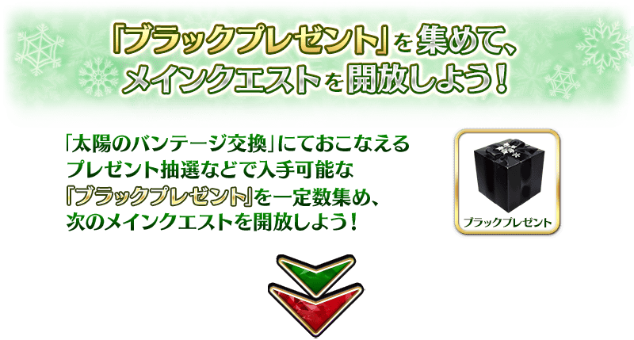
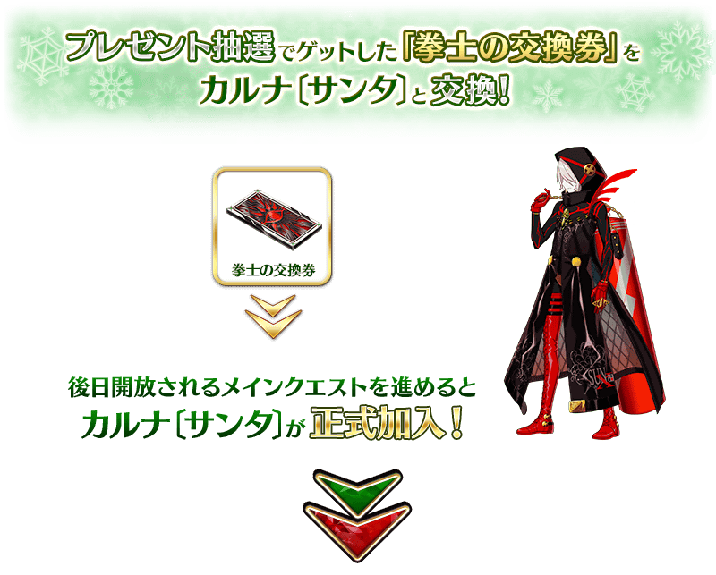
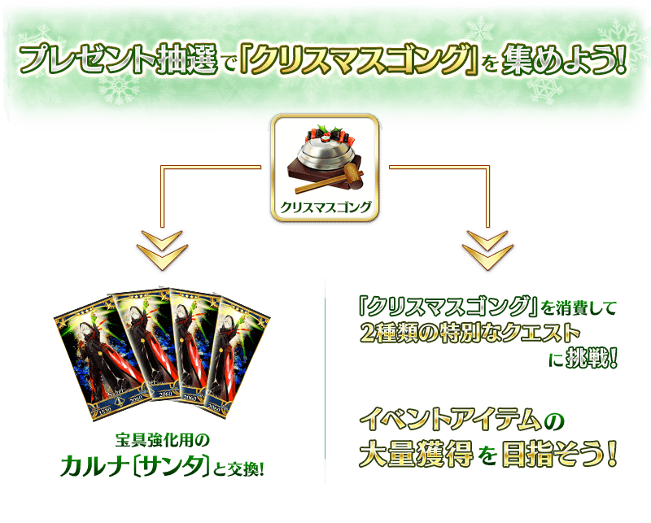
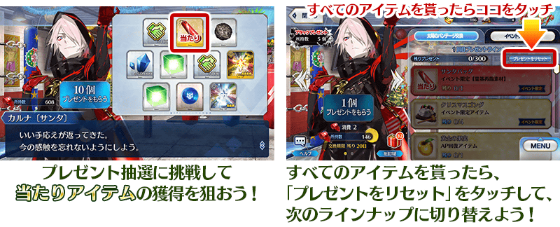
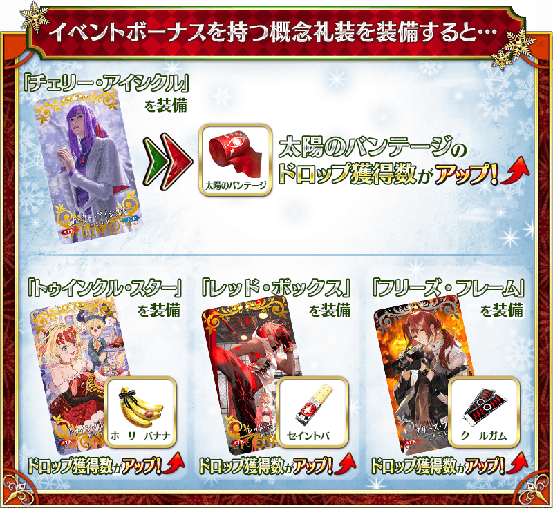
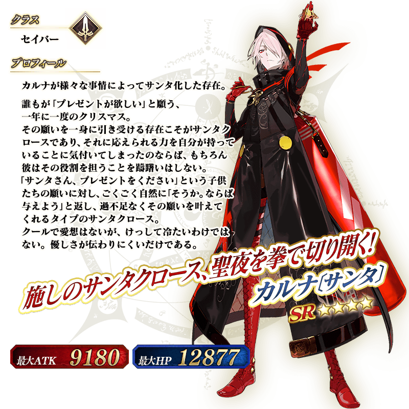

舉辦期間限定活動「榮光的聖誕老人之路 ～被封印的聖誕禮物～」！
今年聖誕季節也來到迦勒底。但是，發生了謎之現象，館內配送的禮物箱不知何時變成無法開封的漆黑箱子。
御主與變成聖誕老人的迦爾納一同為了探究原因，毅然向命名為閉塞特異點的特異點靈子轉移，但…！？
本活動中進行主線關卡的話，活動限定從者「★4(SR)迦爾納〔聖誕〕」會以期間限定暫時加入。
更加推進主線關卡，讓「★4(SR)迦爾納〔聖誕〕」正式加入吧！
活動期間中將開放享受故事的主線關卡。
除了以各關卡入手的活動收集道具交換各種報酬外，還可挑戰得到各式各樣道具的抽選！
在各關卡收集活動道具，得到聖誕節禮物吧！
※本頁面皆為開發中圖片。會有與實際圖片相異的情況。 ※一部份的關卡為日後開放。
◆活動舉辦期間◆
2020年12月16日(三) 17:00～12月30日(三) 11:59
◆活動參加條件◆
滿足以下條件的御主才能參加
・通過「特異點F 炎上汙染都市 冬木」
◆有關從者真名的注意◆
在2018年12月31日(二) 23:00以後新配信的主線故事及期間限定活動、一部份關卡、宣傳活動及召喚中，會顯示隱藏真名的對象從者真名。
※2018年12月31日(一) 22:59前已經配信的主線故事、復刻活動、一部份關卡中不在此限。

在「Fate/Grand Order」官方網站內首頁及Gallery，公開了期間限定活動「榮光的聖誕老人之路 ～被封印的聖誕禮物～」的電視廣告。
敬請確認。
動畫製作：A-1 Pictures




※12月16日(三) 18:00圖片修正 ※「聖誕信號鐘」與「迦爾納〔聖誕〕【寶具強化用】」的交換會在「★4(SR)迦爾納〔聖誕〕」正式加入後開放。
享受故事的主線關卡會以下表的行程開放。
推進主線關卡的話，會開放可收集活動道具的自由關卡。
【關卡的舉辦期間】
| 關卡的種類 | 舉辦期間 |
|---|---|
|
序幕(プロローグ)～ 主線關卡 第1R 自由關卡 |
2020年12月16日(三) 17:00～ 12月30日(三) 11:59 |
|
主線關卡 第2R 自由關卡 |
2020年12月17日(四) 17:00～ 12月30日(三) 11:59 |
|
主線關卡 第3R 自由關卡 |
2020年12月18日(五) 17:00～ 12月30日(三) 11:59 |
|
主線關卡 第4R 自由關卡 |
2020年12月19日(六) 17:00～ 12月30日(三) 11:59 |
|
主線關卡 第5R 自由關卡 |
2020年12月20日(日) 17:00～ 12月30日(三) 11:59 |
| 主線關卡 第6R 自由關卡 |
2020年12月21日(一) 17:00～ 12月30日(三) 11:59 |
| 主線關卡 最終R 後記(エピローグ) 自由關卡 |
迦爾納〔聖誕〕正式加入
2020年12月22日(二) 17:00～
12月30日(三) 11:59 |
在期間限定活動「榮光的聖誕老人之路 ～被封印的聖誕禮物～」的禮物抽選等可獲得「黑暗禮物」。
收集一定數「黑暗禮物」後會開放下個主線關卡，進行禮物抽選來收集「黑暗禮物」吧！
消耗能在禮物抽選獲得的「聖誕信號鐘」的話，可挑戰2種特別的關卡。
消耗「聖誕信號鐘」才可挑戰的特殊關卡中，通過的話可獲得更多的活動道具。
※無法通過關卡的情況，不會消耗「聖誕信號鐘」。

在活動關卡收集「太陽繃帶」，於禮物抽選交換禮物吧！
禮物的交換是以抽選方式進行。
禮物的陣容會各放入1個大獎道具。
抽到所有的道具，點擊「禮物重置」的話，會補充新的大獎道具，切換到下個陣容。
放入大獎道具禮物的陣容有10次份！
包含大獎道具的所有禮物都沒了的話，點擊「禮物重置」來補充大獎道具吧！
※本活動的「禮物重置」只限所有禮物都沒了時才會顯示。 ※第11次以後，不會補充大獎道具及「黃金果實」「白銀果實」。 ※第21次以後，不會對陣容補充「黑暗禮物」。 ※在禮物陣容活動道具「聖誕信號鐘」可交換「迦爾納〔聖誕〕【寶具強化用】」和素材外，收集的話可施行特別的關卡。 ※交換期間結束後「太陽繃帶」會消失。
◆交換期間◆
2020年12月16日(三) 17:00～2021年1月6日(三) 11:59

※12月16日(三) 17:00圖片修正
◆禮物陣容◆
【大獎道具】
| 陣容次數 | 大獎道具 | ||
|---|---|---|---|
| 第1～4次 | 活動限定靈基再臨素材「聖誕沙袋」 | ||
| 第5次 | 拳擊手交換券 | ||
| 第6次 |

|
傳承結晶 | |
| 第7～10次 |

|
英靈結晶・日輪之芙芙ALL★4(ATK) | |
※通過本活動的後記(エピローグ)後才能在活動道具交換用拳擊手交換券交換「★4(SR)迦爾納〔聖誕〕」。
【禮物】
| 種類 | 禮物 | ||
|---|---|---|---|
| 活動道具 | 聖誕信號鐘 | ||
| 聖誕節2020交換券 | |||
| 黑暗禮物 ※到第50次 | |||
| 技能強化＆靈基再臨素材 |
隕蹄鐵 世界樹之種 虛影之塵 魔術髓液 |
||
| 技能強化素材 |
劍之秘石 弓之秘石 槍之秘石 騎之秘石 術之秘石 殺之秘石 狂之秘石 剣之魔石 弓之魔石 槍之魔石 騎之魔石 術之魔石 殺之魔石 狂之魔石 剣之輝石 弓之輝石 槍之輝石 騎之輝石 術之輝石 殺之輝石 狂之輝石 |
||
| 其他道具 |
睿智的猛火ALL★4(SR) 睿智的大火ALL★3(R) 黃金果實 ※到第10次 白銀果實 ※到第10次 赤銅果實 魔力稜鏡 QP 友情點數 |
||
※12月16日(三) 17:00修正
關於聖誕節2020交換券
聖誕節2020交換券可自禮物箱3種道具交換任一種。
能交換道具為「血之淚石」「神脈靈子」「閑古鈴」。
持有好幾張聖誕節2020交換券的情況，能一口氣全部交換。
※交換期間結束後「聖誕節2020交換券」會消失。
◆交換期間◆
2020年12月16日(三) 17:00～2021年1月9日(六) 11:59

【12月22日(二) 17:00追記】
以通過期間限定活動「榮光的聖誕老人之路 ～被封印的聖誕禮物～」的後記(エピローグ)及「終局特異點」的御主做為對象，開放高難易度的「挑戰關卡」。
「挑戰關卡」就算通過後也不會消失，可以變更從者和概念禮裝的組合等後無限次挑戰。
※關卡通過報酬、戰利品、御主EXP、魔術禮裝EXP、絆點數只可在初次通過時獲得。 ※本活動的挑戰關卡無法接關。
◆挑戰關卡開放時間◆
2020年12月22日(二) 17:00～
◆挑戰關卡參加條件◆
滿足以下條件的御主才能參加
・通過期間限定活動「榮光的聖誕老人之路 ～被封印的聖誕禮物～」的後記(エピローグ)
・通過「終局特異點」
◆挑戰關卡初次通過報酬◆
傳承結晶 1個
超值攻略方法・其1
本活動的期間中，強化「★4(SR)迦爾納〔聖誕〕」時的獲得經驗值變成2倍。
是讓活動加成對象「★4(SR)迦爾納〔聖誕〕」等級一口氣上升的機會！
◆舉辦期間◆
2020年12月16日(三) 17:00～12月30日(三) 11:59
超值攻略方法・其2
本活動的期間中，下表的從者在活動關卡中會得到「自身的攻擊威力提升」與「絆點數獲得量提升」的加成！
強化對象從者，挑戰活動吧！
※活動加成的效果量因從者而異。 ※瑪琇・基利艾拉特「絆點數獲得量提升」效果，是所謂「我方全體含候補的絆點數獲得量提升」的效果。支援時此效果無效。
※12月16日(三) 17:00圖片修正
【活動加成的效果與對象從者】
| 自身的 攻擊威力 |
絆點數 獲得量 |
職階 | 稀有度 | 從者名 |
|---|---|---|---|---|
| ＋100% | 只限自身 ＋50% |
Saber | ★★★★ | 迦爾納〔聖誕〕 |
| Lancer | ★★★★★ | 弗栗多 | ||
| ＋50% | 只限自身 ＋20% |
Archer | ★★★★★ | 阿周那 |
| ★★★★ | 阿提拉・the・San〔誕〕 | |||
| ★★★★ | 南丁格爾〔聖誕〕 | |||
| Lancer | ★★★★★ | 迦爾納 | ||
| ★★★★ | 貞德・Alter・聖誕・Lily | |||
| ★★★★ | 帕爾瓦蒂 | |||
| Rider | ★★★★ | 阿爾托莉亞・潘德拉剛〔聖誕Alter〕 | ||
| ★★ | 聖喬治 | |||
| Berserker | ★★★★★ | 阿周那〔Alter〕 | ||
| ★★★★ | 貝奧武夫 | |||
| Ruler | ★★★★ | 魁札爾・科亞特爾〔森巴／聖誕〕 | ||
| ★★★★ | 瑪爾大 | |||
| ＋30% | 只限自身 ＋20% |
Saber | ★★★★★ | 西格魯德 |
| ★★★★★ | 莫德雷德 | |||
| ★★★★ | 齊格飛 | |||
| Archer | ★★★★ | 馬嘶 | ||
| Lancer | ★★★★ | 伊莉莎白・巴托里 | ||
| ★★★★ | 謎之Alterego・Λ | |||
| Rider | ★★★★ | 瑪爾大 | ||
| ★★★ | 赤兔馬 | |||
| Caster | ★★★★★ | 斯卡哈＝斯卡蒂 | ||
| ★★★★ | 齊格 | |||
| ★★★★ | 童謠 | |||
| Assassin | ★★★★★ | 刑部姬 | ||
| ★★★★★ | 伽摩 | |||
| ★★★★ | 望月千代女(Assassin・樂園) | |||
| Berserker | ★★★ | 清姬 | ||
| Foreigner | ★★★★★ | 葛飾北齋 | ||
| 我方全體 ＋5% |
Shielder | ★★★ | 瑪琇・基利艾拉特 |
※12月16日(三) 17:00修正
※就算成為對象從者也會有未在本活動的主線劇本登場的情況。
※自12月15日(二) 17:00，在從者選擇畫面和從者強化畫面等，追加活動加成篩選器。
由於是只顯示於活動活躍從者的便利功能，敬請活用。
超值攻略方法・其3
裝備活動限定概念禮裝與期間限定概念禮裝，會提升活動道具的掉落獲得數！
裝備可在活動道具交換入手的活動限定概念禮裝「★5(SSR)チェリー・アイシクル」的話，活動道具「太陽繃帶」的掉落獲得數會提升。
另外，裝備在聖晶石召喚Pick Up的期間限定概念禮裝「★5(SSR)トゥインクル・スター」「★4(SR)レッド・ボックス」「★3(R)フリーズ・フレーム」的話，活動道具「神聖香蕉」「聖潔能量棒」「輕涼口香糖」各自的掉落獲得數會提升。
※12月16日(三) 17:00修正
※請注意各關卡的道具掉落率並非100％。

※12月16日(三) 17:00圖片修正

|
★★★★★SSR
|

|
【活動限定】 |

|
★★★★SR |

|
★★★R |

◆靈基再臨◆
使用能靠禮物抽選入手的「聖誕沙包(サンタバッグ)」，重複4次靈基再臨的話，卡面會有所變化！
※「★4(SR)迦爾納〔聖誕〕」不會隨靈基再臨使戰鬥角色的外觀變化。
【12月16日(三) 17:00追記】
介紹「★4(SR)迦爾納〔聖誕〕」的寶具演出！
在「Fate/Grand Order」官方網站內的公告中，以影片公開寶具演出，敬請確認。
活動道具可自點擊管理室(ターミナル)畫面右上「活動報酬」的「活動道具交換」畫面，交換以下的道具。
※關於英靈結晶・流星之芙芙ALL★4(HP)、500,000QP的交換，會在進行12月22日(二)開放的本活動後才能交換。 ※活動道具交換期間結束後「聖誕信號鐘」「神聖香蕉」「聖潔能量棒」「輕涼口香糖」「太陽繃帶」「拳士的交換券」會消失。
◆交換期間◆
2020年12月16日(三) 17:00～2021年1月6日(三) 11:59
◆能用聖誕信號鐘交換的道具◆
|
【活動限定從者】 【其他道具】 |
◆能用神聖香蕉交換的道具◆
|
【活動限定概念禮裝】 【活動報酬指令紋章】 【技能強化＆靈基再臨素材】 【靈基再臨素材】 【其他道具】 |
◆能用聖潔能量棒交換的道具◆
|
【活動限定概念禮裝】 【活動報酬指令紋章】 【技能強化＆靈基再臨素材】 【靈基再臨素材】 【其他道具】 |
◆能用輕涼口香糖交換的道具◆
|
【活動限定概念禮裝】 【活動報酬指令紋章】 【技能強化＆靈基再臨素材】 【其他道具】 |
【12月16日(三) 17:00追記】
「★2(UC)聖喬治」的戰鬥動作及寶具演出翻新！
另外，伴隨對一部份裝置全螢幕顯示的對應，開放「★2(UC)聖喬治」寶具演出也對應到全螢幕顯示。
在「Fate/Grand Order」官方網站內的公告中，以影片公開寶具演出，敬請確認。
◆翻新實施時間◆
2020年12月16日(三) 17:00～

【12月16日(三) 17:00追記】
強化「★4(SR)貝奧武夫」的特別關卡「從者強化關卡」，在迦勒底之門永久追加。
不僅進行對象從者的強化，也可獲得聖晶石做為關卡通過報酬。
※從者強化關卡請注意在沒有文字冒險部份。
◆追加時間◆
2020年12月16日(三) 17:00～
◆開放條件◆
持有的強化對象從者，必須使其最終再臨。
※未持有對象從者的話，不會出現關卡。
※關卡沒有舉辦期限。

【12月16日(三) 17:00追記】
其他還有，期間限定「聖誕節2020Pick Up召喚(每日交替)」同時舉辦！
關於詳情，請自下述橫幅確認。
■「聖誕節2020Pick Up召喚(每日交替)」詳細情報